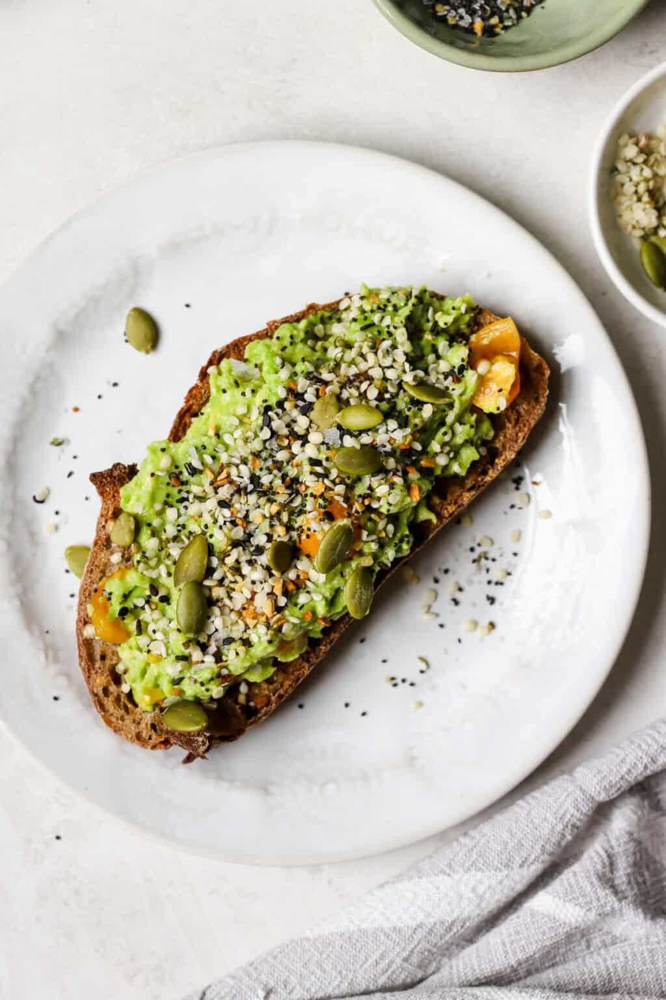

My favorite meal recipe

Ingredients
- 2 ripe avocados
- 4 slices of bread
- 1 tablespoon of everything bagel seasoning
- 1 lemon
- Salt and pepper to taste
Preparation's steps
My recipe
My favorite meal recipe
Ingredients
- 2 ripe avocados
- 4 slices of bread
- 1 tablespoon of everything bagel seasoning
- 1 lemon
- Salt and pepper to taste
Preparation's steps
- Toast the bread slices until golden brown.
- Cut the avocados in half, remove the pit, and scoop the flesh into a bowl.
- Mash the avocados with a fork until smooth.
- Add lemon juice, salt, and pepper to the mashed avocados and mix well.
- Spread the avocado mixture evenly on the toasted bread slices.
- Sprinkle everything bagel seasoning on top of the avocado toast.
Links to my other favorite meals/food
Chicken Tortilla Soup Recipe
Roasted Cherry Tomato
Soup Recipe
My recipte
- Toast the bread slices until golden brown.
- Cut the avocados in half, remove the pit, and scoop the flesh into a bowl.
- Mash the avocados with a fork until smooth.
- Add lemon juice, salt, and pepper to the mashed avocados and mix well.
- Spread the avocado mixture evenly on the toasted bread slices.
- Sprinkle everything bagel seasoning on top of the avocado toast.
Links to my other favorite meals/food
Chicken Tortilla Soup Recipe
Roasted Cherry Tomato Soup
Recipe
My recipte